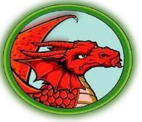
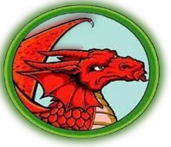

Aqui trabajamos la comprension lectora, todos mis compañeros leimos, constaba de poner el cronometro y saber cuanto leiamos en ciertos segundos, haciamos una regla de 3 y asi ibamos a saber cuantas palabras leiamos por tantos segundos.
Materia: Orientacion
Maestro: Abraham Sotero Salazar
|
Para este proyecto hicimos un cuadro sinoptico, sacamos la informacion de unas hojas que nos dio.
Materia: Ecologia
Maestro: Lic. Juan Antonio Moreno López
|
Con la maestra de historia universal, realizamos un cuestionario a base de una lectura de la Revolucion Rusa.
Maestro: Lic. Elvira Alva Sanchez
Materia: Historia Universal
|
Con la maestra de calculo realizamos una operacion sobre calcular el area bajo la curva, teniamos que seleccionar un libro de nuestro gusto, donde tuviera una tabla.
Maestro: Lic. Anahí Victoria Correa Casimiro
Materia: Calculo Integral
|
En fisica hicimos un dibujo de ilusion optica.
Maestro: Arq. Xareni Isabel Aldama Navarrete
Materia: Fisica
|
En educacion fisica realizamos una competicion, donde se hicieron varios equipos, del cual salia uno de cada grupo, quienes se enfrentarian al final para ganar dinero.
Maestro: Prof. Alberto Becerra Sanchez
Materia: Educacion Fisica
|
 
